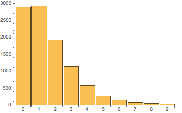
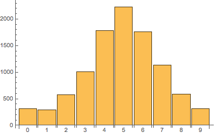

(1) 写一个方法将一个数组随机打乱
例如： arr = [1, 2, 3, 4, 5, 6, 7, 8, 9, 10]，通过一个方法 randFun = func(arr)，返回一个新的数组 newArr = [2, 1, 4, 3, 5, 6, 7, 10, 8, 9]。
方法一：sort排序法（最简单的打乱数组顺序的方法）
1 | 利用sort用法：arr.sort(compareFunction) |
常见写法如下：1
2
3
4
5
6
7
8
9
10
11
12
13
14
15
16// ES5:
let arr = [1, 2, 3, 4, 5];
function randFun(arr) {
arr.sort(function () {
return Math.random() - 0.5;
});
}
let newArr = randFun(arr);
// ES6：
let arr = [1, 2, 3, 4, 5];
let newArr = arr => arr.sort(() => Math.random() - 0.5);
// 引申：
let arr = [1, 2, 3, 4, 5];
let newArr = arr => arr.sort(() => Math.random() - Math.random());
但是这种方法有个弊端，它并不能真正地随机打乱数组。
弊端
看下面的代码，我们生成一个长度为 10 的数组[‘a’, ‘b’, ‘c’, ‘d’, ‘e’, ‘f’, ‘g’, ‘h’, ‘i’, ‘j’]，使用上面的方法将数组乱序，执行多次后，会发现每个元素仍然有很大机率在它原来的位置附近出现。
1 | let n = 10000; |
输出[ 2891, 2928, 1927, 1125, 579, 270, 151, 76, 34, 19 ]（带有一定随机性，每次结果都不同，但大致分布应该一致），即进行 10000 次排序后，字母’a’（数组中的第一个元素）有约 2891 次出现在第一个位置、2928 次出现在第二个位置，与之对应的只有 19 次出现在最后一个位置。如果把这个分布绘制成图像，会是下面这样：

类似地，我们可以算出字母’f’（数组中的第六个元素）在各个位置出现的分布为[ 312, 294, 579, 1012, 1781, 2232, 1758, 1129, 586, 317 ]，图像如下：

如果排序真的是随机的，那么每个元素在每个位置出现的概率都应该一样，实验结果各个位置的数字应该很接近，而不应像现在这样明显地集中在原来位置附近。因此，可以认为，使用形如arr.sort(() => Math.random() - 0.5)这样的方法得到的并不是真正的随机排序。
方法二：循环随机位交换法（最容易理解的打乱数组顺序的方法）
原理：循环遍历该数组，在每次遍历中产生一个(0 ~ length - 1)之间的随机下标的数，该数代表本次循环要随机交换的位置。
将本次循环当前位置的数和随机位置的数进行交换。
1 | let arr = [1, 2, 3, 4, 5]; |
方法三：Fisher–Yates 洗牌算法
和方法二类似
1 | ES6： |
总结：
- 如果是循环内容次数比较少的时候，可以取巧地使用方法一，写法比较简单，容易记忆；
- 如果是在循环次数较多的情况下，使用方法一不好，可以选择使用方法二或者方法三。